Création d’une VM sous VMWare
Création de la VM
Appuyer sur le bouton de création
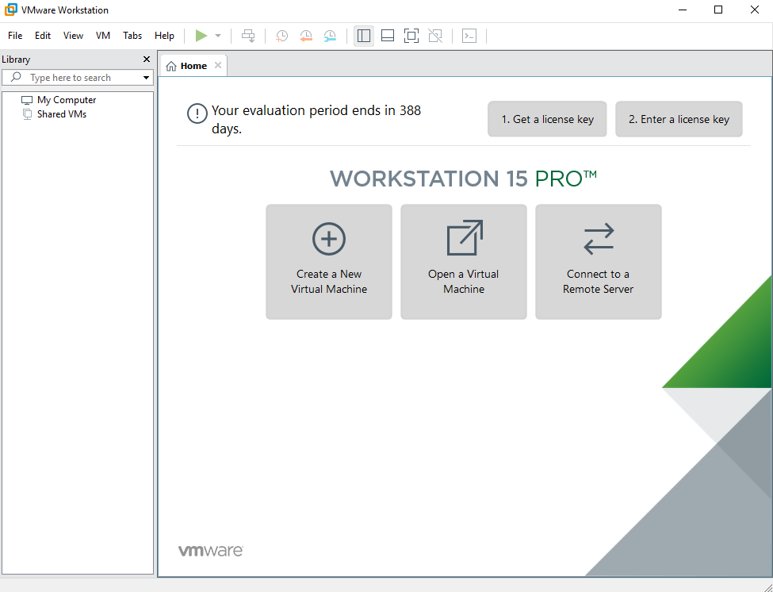Etape 01
Attention: ne pas choisir Typical
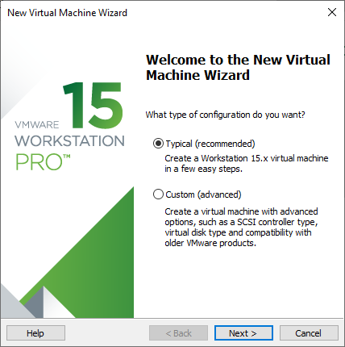Etape 02
Choisir Custom
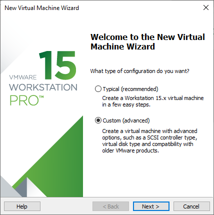Etape 03
Appuyer sur le bouton Next
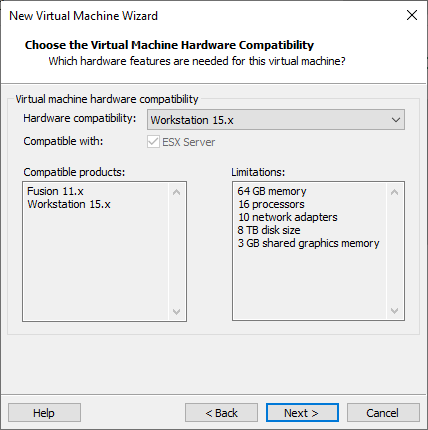Etape 04
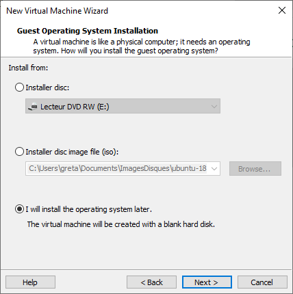Etape 06
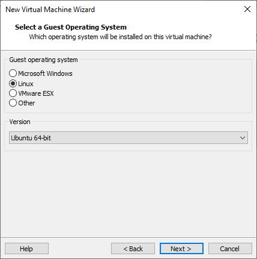Etape 07
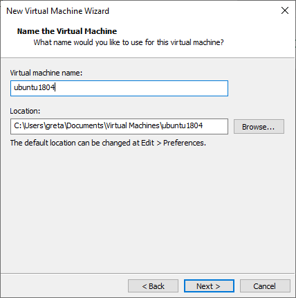Etape 08
 Etape 09
Etape 09
Mémoire vive : 4Go
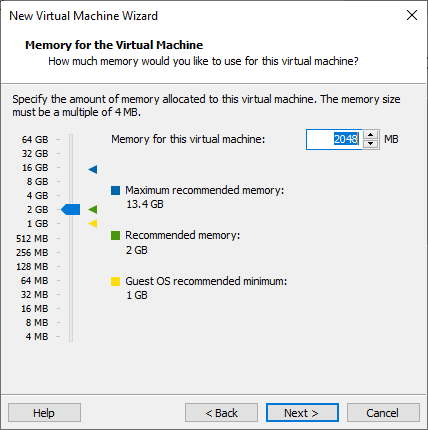Etape 10
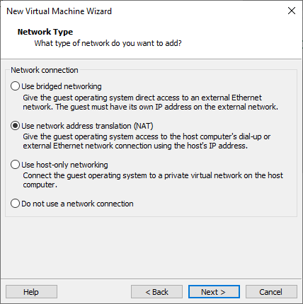Etape 11
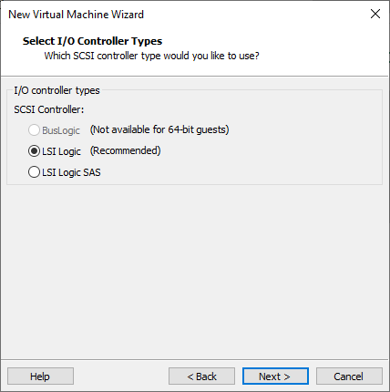Etape 12
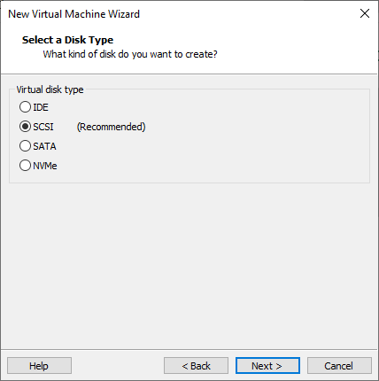Etape 13
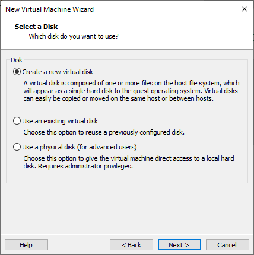Etape 14
Taille du disque dur: 25Go
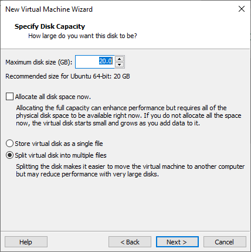Etape 15
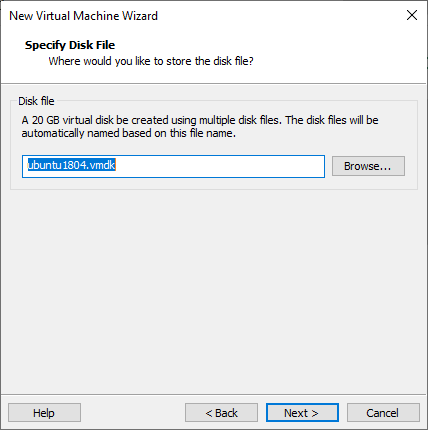Etape 16
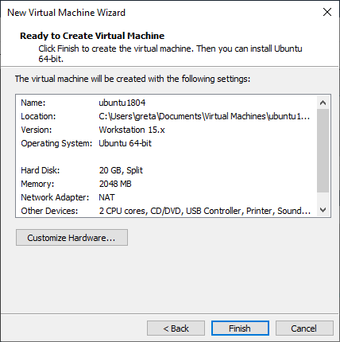Etape 17
Insertion du disque d’installation
Cliquer sur CD/DVD
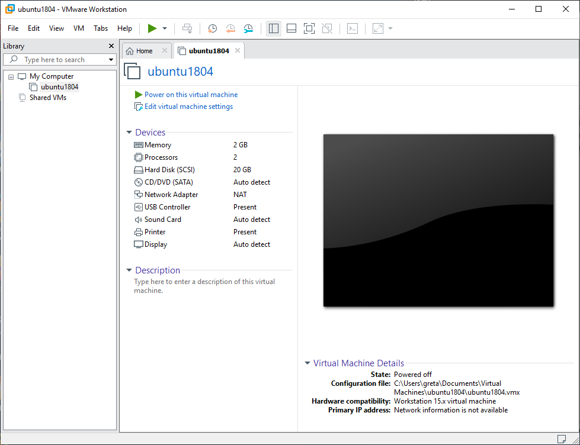Etape 18
Choisir l’image ISO donnée par le formateur
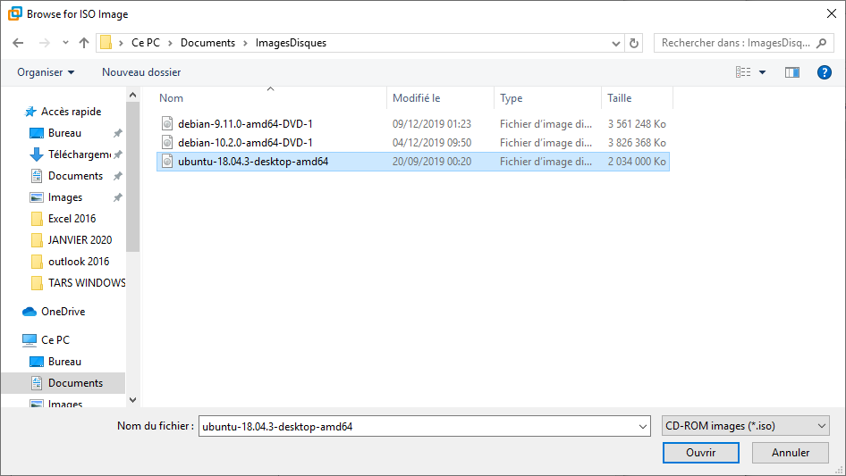Etape 19
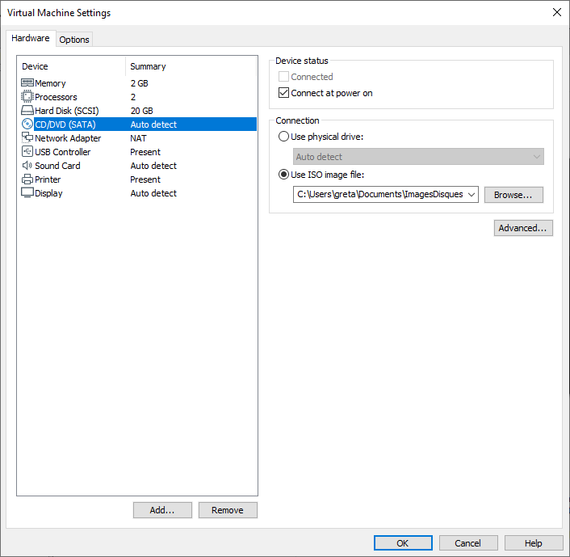Etape 20
Cliquer sur OK puis appuyer sur Démarrer la machine virtuelle (ou Power On)